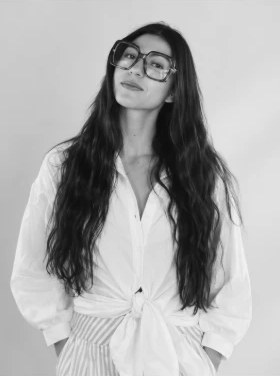

<title>Mava Studio</title>
<meta name="claude:viewport-fit-sides" content="cover">
<meta name="description" content="Mava Studio — pesquisa de tendências e inteligência artificial aplicadas ao desenvolvimento de produto de moda.">
<link rel="preconnect" href="https://fonts.googleapis.com">
<link rel="preconnect" href="https://fonts.gstatic.com" crossorigin>
<link rel="stylesheet" href="https://fonts.googleapis.com/css2?family=EB+Garamond:ital,wght@0,400;0,500;1,400&family=Hanken+Grotesk:wght@400;500;600;800&family=Reenie+Beanie&display=swap">
<style>
/* Layout: caderno de estilo — foto/tecido sangrando na abertura, blocos em formas orgânicas, rabiscos à mão por cima */
:root {
  --taupe: #BDB6AE;
  --taupe-deep: #A39B92;
  --paper: #F2EEE8;
  --ink: #141210;
  --ink-soft: #4A443F;
  --tomato: #C8321E;
  --tomato-deep: #8E1F12;
  --tape: rgba(242, 232, 205, .78);

  --f-grot: "Hanken Grotesk", "Helvetica Neue", Helvetica, Arial, sans-serif;
  --f-serif: "EB Garamond", "Iowan Old Style", Georgia, serif;
  --f-hand: "Reenie Beanie", "Segoe Print", "Bradley Hand", cursive;

  --gutter: clamp(16px, 5vw, 72px);
  --maxw: 1240px;
  color-scheme: light;
}
* { box-sizing: border-box; }
html { scroll-behavior: smooth; }
body {
  background: var(--taupe);
  color: var(--ink);
  font-family: var(--f-grot);
  font-size: 16px;
  line-height: 1.5;
  -webkit-font-smoothing: antialiased;
  overflow-x: hidden;
}
main, footer { overflow-x: clip; }
a { color: inherit; }
img { display: block; max-width: 100%; }
:focus-visible { outline: 2px solid var(--tomato); outline-offset: 3px; }

.wrap {
  max-width: calc(var(--maxw) + 2 * var(--gutter));
  margin-inline: auto;
  padding-left: max(var(--gutter), env(safe-area-inset-left, 0px));
  padding-right: max(var(--gutter), env(safe-area-inset-right, 0px));
}
.label {
  font-family: var(--f-grot);
  font-size: 12px;
  font-weight: 600;
  letter-spacing: .18em;
  text-transform: uppercase;
}
.idx { font-variant-numeric: tabular-nums; letter-spacing: .08em; }
.hand { font-family: var(--f-hand); font-weight: 400; line-height: 1; }
.serif { font-family: var(--f-serif); }

.btn {
  display: inline-flex; align-items: center; gap: .6em;
  padding: 14px 26px;
  border-radius: 999px;
  font: 600 14px/1 var(--f-grot);
  letter-spacing: .06em;
  text-transform: uppercase;
  text-decoration: none;
  border: 1.5px solid currentColor;
  transition: transform .2s ease, background-color .2s ease, color .2s ease;
}
.btn:hover { transform: translateY(-2px); }
.btn-red { background: var(--tomato); color: var(--paper); border-color: var(--tomato); }
.btn-red:hover { background: var(--tomato-deep); border-color: var(--tomato-deep); }
.btn-paper { background: var(--paper); color: var(--ink); border-color: var(--paper); }
.btn-ghost { background: transparent; }
.btn-ink { background: var(--ink); color: var(--paper); border-color: var(--ink); }

.tape {
  position: absolute; width: 92px; height: 26px;
  background: var(--tape);
  box-shadow: 0 1px 2px rgba(0,0,0,.12);
  z-index: 3;
}

.sketch path, .sketch circle, .sketch ellipse { fill: none; stroke-linecap: round; stroke-linejoin: round; }
@media (prefers-reduced-motion: no-preference) {
  .draw path { stroke-dasharray: 900; stroke-dashoffset: 0; animation: draw 1.6s ease-out both; }
  .draw path:nth-child(2) { animation-delay: .25s; }
  .draw path:nth-child(3) { animation-delay: .5s; }
  @keyframes draw { from { stroke-dashoffset: 900; } to { stroke-dashoffset: 0; } }
}

.wave { display: block; width: 100%; height: clamp(40px, 6vw, 90px); }

/* ---------- Header ---------- */
.top {
  position: absolute; inset: 0 0 auto 0; z-index: 10;
  padding-top: calc(env(safe-area-inset-top, 0px) + 22px);
}
.top .wrap { display: flex; align-items: center; justify-content: space-between; gap: 24px; }
.top .logo img { height: 56px; width: auto; }
.top nav { display: flex; gap: clamp(14px, 2.4vw, 34px); flex-wrap: wrap; justify-content: flex-end; }
.top nav a {
  color: var(--paper); text-decoration: none;
  font-size: 12px; font-weight: 600; letter-spacing: .18em; text-transform: uppercase;
}
.top nav a:hover { text-decoration: underline; text-underline-offset: 6px; }
@media (max-width: 640px) {
  .top nav a:not(.keep) { display: none; }
  .top .logo img { height: 44px; }
}

/* ---------- Hero ---------- */
.hero {
  position: relative;
  min-height: clamp(600px, 94vh, 940px);
  display: flex; align-items: flex-end;
  color: var(--paper);
  overflow: hidden;
  background: var(--tomato-deep);
}
.hero-media { position: absolute; inset: 0; }
.hero-media canvas, .hero-media img { width: 100%; height: 100%; object-fit: cover; display: block; }
.hero::after {
  content: ""; position: absolute; inset: 0;
  background: linear-gradient(180deg, rgba(20,18,16,.38) 0%, rgba(20,18,16,0) 28%, rgba(20,18,16,0) 48%, rgba(20,18,16,.62) 100%);
  pointer-events: none;
}
.hero-content { position: relative; z-index: 2; width: 100%; padding-block: 140px clamp(48px, 8vh, 96px); }
.hero h1 {
  margin: 18px 0 0;
  font-family: var(--f-grot);
  font-weight: 800;
  font-size: clamp(52px, 10.4vw, 168px);
  line-height: .9;
  letter-spacing: -.045em;
  text-wrap: balance;
  max-width: 11ch;
}
.hero h1 .v { position: relative; display: inline-block; }
.hero h1 .v svg { position: absolute; left: -8%; top: -14%; width: 116%; height: 132%; overflow: visible; pointer-events: none; }
.hero-foot { margin-top: 28px; display: flex; flex-wrap: wrap; align-items: flex-end; justify-content: space-between; gap: 28px; }
.hero-foot p {
  margin: 0; max-width: 34ch;
  font-family: var(--f-serif); font-size: clamp(20px, 2.1vw, 27px); line-height: 1.25;
}
.hero-ctas { display: flex; gap: 12px; flex-wrap: wrap; }
.hero-notes { position: absolute; inset: 0; z-index: 1; pointer-events: none; }
.note { position: absolute; color: var(--paper); font-size: clamp(22px, 2.2vw, 32px); transform: rotate(-4deg); }
.note svg { position: absolute; overflow: visible; }
@media (max-width: 760px) { .hero-notes .n2, .hero-notes .n3 { display: none; } }

/* ---------- Manifesto ---------- */
.manifesto { background: var(--paper); }
.manifesto .wrap { padding-block: clamp(64px, 10vw, 140px); display: grid; grid-template-columns: minmax(0, 1.6fr) minmax(0, 1fr); gap: clamp(32px, 6vw, 96px); align-items: start; }
.manifesto blockquote {
  margin: 22px 0 0;
  font-family: var(--f-serif); font-weight: 400;
  font-size: clamp(28px, 3.6vw, 50px); line-height: 1.12; letter-spacing: -.01em;
  text-wrap: pretty;
}
.manifesto blockquote em { color: var(--tomato); }
.acro { list-style: none; margin: 0; padding: 0; display: grid; gap: 14px; }
.acro li { display: flex; align-items: center; gap: 18px; font-weight: 600; letter-spacing: .2em; font-size: 14px; }
.acro .ini { position: relative; width: 64px; height: 64px; display: grid; place-items: center; font-size: 34px; font-weight: 800; letter-spacing: 0; }
.acro .ini svg { position: absolute; inset: -6px; width: calc(100% + 12px); height: calc(100% + 12px); }
@media (max-width: 820px) { .manifesto .wrap { grid-template-columns: 1fr; } }

/* ---------- Quem fala ---------- */
.about { background: var(--taupe); position: relative; }
.about .wrap { padding-block: clamp(56px, 9vw, 120px); }
.about-grid { display: grid; grid-template-columns: minmax(0, 1.3fr) minmax(0, 1fr); gap: clamp(32px, 6vw, 96px); align-items: center; }
.about h2 {
  margin: 18px 0 6px;
  font-weight: 800; font-size: clamp(48px, 7vw, 104px); line-height: .92; letter-spacing: -.04em;
}
.about .sub { margin: 0; font-family: var(--f-serif); font-style: italic; font-size: clamp(22px, 2.4vw, 30px); }
.about .bio { margin: 24px 0 0; max-width: 46ch; font-family: var(--f-serif); font-size: 19px; line-height: 1.5; color: var(--ink-soft); }
.portrait { position: relative; justify-self: center; width: min(100%, 380px); }
.portrait .frame {
  aspect-ratio: 280 / 376; max-width: 100%;
  border-radius: 999px 999px 28px 28px;
  overflow: hidden; background: var(--taupe-deep);
}
.portrait .frame img { width: 100%; height: 100%; object-fit: cover; }
.portrait .tape { top: -10px; left: 50%; transform: translateX(-50%) rotate(-3deg); }
.portrait .n { position: absolute; color: var(--tomato); font-size: 30px; }
.portrait .n svg { position: absolute; overflow: visible; }
.stats { margin-top: clamp(48px, 7vw, 88px); display: grid; grid-template-columns: repeat(4, minmax(0, 1fr)); gap: 24px; border-top: 1.5px solid var(--ink); padding-top: 28px; }
.stat b { display: inline-block; position: relative; font-weight: 800; font-size: clamp(44px, 5.4vw, 76px); line-height: 1; letter-spacing: -.04em; font-variant-numeric: tabular-nums; }
.stat span { display: block; margin-top: 10px; max-width: 22ch; font-size: 12px; font-weight: 600; letter-spacing: .14em; text-transform: uppercase; color: var(--ink-soft); }
.stat.mark b svg { position: absolute; left: -16%; top: -22%; width: 132%; height: 144%; overflow: visible; }
.brands { margin-top: 40px; display: flex; flex-wrap: wrap; gap: 10px 28px; font-size: 15px; font-weight: 500; }
.brands li { list-style: none; }
.brands { padding: 0; }
@media (max-width: 860px) {
  .about-grid { grid-template-columns: 1fr; }
  .stats { grid-template-columns: repeat(2, minmax(0, 1fr)); row-gap: 36px; }
}

/* ---------- Serviços ---------- */
.services { background: var(--paper); }
.services .wrap { padding-block: clamp(56px, 9vw, 120px); }
.sec-head { display: flex; flex-wrap: wrap; justify-content: space-between; align-items: end; gap: 20px; }
.sec-head h2 { margin: 14px 0 0; font-weight: 800; font-size: clamp(40px, 5.6vw, 80px); line-height: .95; letter-spacing: -.04em; text-wrap: balance; }
.sec-head p { margin: 0; max-width: 36ch; font-family: var(--f-serif); font-size: 20px; line-height: 1.35; color: var(--ink-soft); }
.svc-list { margin-top: clamp(40px, 6vw, 80px); display: grid; grid-template-columns: repeat(3, minmax(0, 1fr)); gap: clamp(28px, 4vw, 56px); }
.svc { display: flex; flex-direction: column; gap: 18px; }
.svc .swatch { position: relative; aspect-ratio: 1 / 1; max-width: 100%; }
.svc .swatch canvas { width: 100%; height: 100%; display: block; }
.svc:nth-child(1) .swatch canvas { border-radius: 58% 42% 51% 49% / 46% 56% 44% 54%; }
.svc:nth-child(2) .swatch canvas { border-radius: 999px 999px 40px 40px; }
.svc:nth-child(3) .swatch canvas { border-radius: 42% 58% 38% 62% / 60% 40% 60% 40%; }
.svc .swatch .n { position: absolute; right: 4%; bottom: 6%; color: var(--paper); font-size: 30px; transform: rotate(-6deg); text-shadow: 0 1px 8px rgba(0,0,0,.25); }
.svc .meta { display: flex; justify-content: space-between; border-top: 1.5px solid var(--ink); padding-top: 12px; }
.svc h3 { margin: 0; font-weight: 700; font-size: clamp(24px, 2.2vw, 30px); line-height: 1.05; letter-spacing: -.02em; }
.svc p { margin: 0; font-family: var(--f-serif); font-size: 19px; line-height: 1.4; color: var(--ink-soft); flex: 1; }
.svc .btn { align-self: flex-start; }
.svc .via { font-family: var(--f-hand); font-size: 22px; color: var(--tomato); }
@media (max-width: 900px) { .svc-list { grid-template-columns: 1fr; } .svc .swatch { max-width: 420px; } }

/* ---------- Reports ---------- */
.reports { background: var(--taupe); }
.reports .wrap { padding-block: clamp(56px, 9vw, 120px); }
.rep-grid { margin-top: clamp(48px, 7vw, 96px); display: grid; grid-template-columns: repeat(2, minmax(0, 1fr)); gap: clamp(48px, 7vw, 110px); }
.rep { display: grid; grid-template-columns: minmax(0, 220px) minmax(0, 1fr); gap: 28px; align-items: start; }
.cover {
  position: relative; aspect-ratio: 3 / 4; max-width: 100%;
  padding: 18px 16px; display: flex; flex-direction: column; justify-content: space-between;
  box-shadow: 0 18px 30px -18px rgba(20,18,16,.55);
}
.rep:nth-child(1) .cover { background: var(--ink); color: var(--paper); transform: rotate(-3deg); }
.rep:nth-child(2) .cover { background: var(--tomato); color: var(--paper); transform: rotate(2.5deg); }
.cover .tape { top: -12px; left: 18%; transform: rotate(-6deg); }
.cover .t { font-weight: 800; font-size: 30px; line-height: .92; letter-spacing: -.03em; }
.cover .s { font-size: 10px; font-weight: 600; letter-spacing: .18em; text-transform: uppercase; display: flex; justify-content: space-between; }
.cover .scrib { position: absolute; right: 10px; top: 16%; color: var(--paper); font-size: 24px; transform: rotate(-8deg); opacity: .9; }
.rep h3 { margin: 0 0 10px; font-weight: 700; font-size: clamp(24px, 2.3vw, 32px); line-height: 1.05; letter-spacing: -.02em; }
.rep p { margin: 0 0 22px; font-family: var(--f-serif); font-size: 19px; line-height: 1.4; color: var(--ink-soft); }
@media (max-width: 980px) { .rep-grid { grid-template-columns: 1fr; } }
@media (max-width: 520px) { .rep { grid-template-columns: 1fr; } .cover { width: 70%; } }

/* ---------- FAQ ---------- */
.faq { background: var(--paper); }
.faq .wrap { padding-block: clamp(56px, 9vw, 120px); display: grid; grid-template-columns: minmax(0, 1fr) minmax(0, 1.6fr); gap: clamp(32px, 6vw, 96px); }
.faq-list { border-top: 1.5px solid var(--ink); }
.faq details { border-bottom: 1.5px solid var(--ink); }
.faq summary {
  list-style: none; cursor: pointer;
  display: flex; justify-content: space-between; align-items: center; gap: 20px;
  padding: 22px 0;
  font-weight: 600; font-size: clamp(18px, 1.7vw, 22px); letter-spacing: -.01em;
}
.faq summary::-webkit-details-marker { display: none; }
.faq summary .pm { flex: none; font-family: var(--f-hand); font-size: 34px; color: var(--tomato); transition: transform .2s ease; }
.faq details[open] summary .pm { transform: rotate(45deg); }
.faq details p { margin: 0 0 24px; max-width: 58ch; font-family: var(--f-serif); font-size: 19px; line-height: 1.45; color: var(--ink-soft); }
@media (max-width: 820px) { .faq .wrap { grid-template-columns: 1fr; } }

/* ---------- Contato ---------- */
.contact { background: var(--tomato); color: var(--paper); }
.contact .wrap { padding-block: clamp(64px, 10vw, 140px) clamp(40px, 6vw, 72px); }
.contact h2 {
  margin: 18px 0 0; max-width: 14ch;
  font-weight: 800; font-size: clamp(48px, 8.6vw, 136px); line-height: .9; letter-spacing: -.045em;
  text-wrap: balance;
}
.contact h2 .u { position: relative; white-space: nowrap; }
.contact h2 .u svg { position: absolute; left: -2%; bottom: -.18em; width: 104%; height: .32em; overflow: visible; }
.contact-row { margin-top: clamp(40px, 6vw, 72px); display: flex; flex-wrap: wrap; justify-content: space-between; align-items: end; gap: 32px; }
.channels { display: grid; gap: 14px; margin: 0; padding: 0; }
.channels li { list-style: none; display: grid; grid-template-columns: 110px minmax(0, 1fr); gap: 12px; align-items: baseline; }
.channels .k { font-size: 12px; font-weight: 600; letter-spacing: .18em; text-transform: uppercase; opacity: .85; }
.channels .v { font-family: var(--f-serif); font-size: clamp(20px, 2vw, 26px); overflow-wrap: anywhere; }
.channels a { text-decoration-thickness: 1px; text-underline-offset: 4px; }

footer { background: var(--ink); color: var(--paper); }
footer .wrap { padding-block: 32px calc(32px + env(safe-area-inset-bottom, 0px)); display: flex; flex-wrap: wrap; justify-content: space-between; align-items: center; gap: 20px; }
footer img { height: 46px; width: auto; }
footer .sig { font-family: var(--f-serif); font-style: italic; font-size: 19px; }
footer small { font-size: 12px; letter-spacing: .14em; text-transform: uppercase; opacity: .7; }
</style>

<header class="top">
  <div class="wrap">
    <a class="logo" href="#topo" aria-label="Mava Studio — início"></a>
    <nav aria-label="Principal">
      <a href="#sobre">Sobre</a>
      <a href="#servicos">Serviços</a>
      <a href="#reports">Reports</a>
      <a href="#faq">FAQ</a>
      <a class="keep" href="#contato">Contato</a>
    </nav>
  </div>
</header>

<main id="topo">
  <!-- (001) Abertura: para usar uma foto, troque o <canvas> por  -->
  <section class="hero" aria-label="Abertura">
    <div class="hero-media"><canvas id="heroFabric" width="420" height="280" aria-hidden="true"></canvas></div>

    <div class="hero-notes" aria-hidden="true">
      <div class="note hand n1" style="right: 9%; top: 24%;">
        caimento fluido
        <svg class="sketch draw" width="120" height="90" style="left: -96px; top: 22px;" viewBox="0 0 120 90"><path d="M118 6 C 86 10, 54 26, 30 58 M30 58 L 34 40 M30 58 L 48 54" stroke="#F2EEE8" stroke-width="2.4"/></svg>
      </div>
      <div class="note hand n2" style="right: 30%; top: 40%; transform: rotate(3deg);">
        cor do mês: tomate
        <svg class="sketch draw" width="220" height="40" style="left: -6px; top: 34px;" viewBox="0 0 220 40"><path d="M4 18 C 50 8, 120 30, 214 12" stroke="#F2EEE8" stroke-width="2.2"/></svg>
      </div>
      <div class="note hand n3" style="left: 58%; top: 15%; transform: rotate(-7deg);">
        prompt → render
      </div>
    </div>

    <div class="hero-content">
      <div class="wrap">
        <div class="label">Mava Studio — Moda · Pesquisa · IA</div>
        <h1>Moving Artistic <span class="v">Visions<svg class="sketch draw" viewBox="0 0 300 120" preserveAspectRatio="none" aria-hidden="true"><path d="M150 8 C 60 6, 8 30, 10 62 C 12 96, 90 114, 170 110 C 250 106, 294 82, 290 52 C 286 22, 220 6, 132 14" stroke="#F2EEE8" stroke-width="3"/></svg></span> Ahead.</h1>
        <div class="hero-foot">
          <p>Pesquisa de tendências e inteligência artificial aplicadas ao desenvolvimento de produto de moda.</p>
          <div class="hero-ctas">
            <a class="btn btn-paper" href="#servicos">Conheça os serviços</a>
            <a class="btn btn-ghost" href="#contato">Fale comigo</a>
          </div>
        </div>
      </div>
    </div>
  </section>

  <!-- (002) Manifesto -->
  <section class="manifesto" id="sobre" aria-labelledby="manifesto-t">
    <div class="wrap">
      <div>
        <div class="label idx" id="manifesto-t">(002) Manifesto</div>
        <blockquote>Toda coleção começa com uma visão. A MAVA existe para levá-la adiante, unindo o olhar criativo da moda à precisão da pesquisa e ao potencial da inteligência artificial. <em>Tecnologia não substitui o design. Ela amplia o que ele pode ser.</em></blockquote>
      </div>
      <ul class="acro" aria-label="O que significa MAVA">
        <li><span class="ini">M<svg class="sketch" viewBox="0 0 80 80" aria-hidden="true"><path d="M40 6 C 14 6, 5 26, 7 44 C 9 66, 30 76, 48 73 C 68 70, 77 52, 74 34 C 71 14, 52 4, 32 9" stroke="#C8321E" stroke-width="2.4"/></svg></span>Moving</li>
        <li><span class="ini">A<svg class="sketch" viewBox="0 0 80 80" aria-hidden="true"><path d="M44 7 C 20 4, 6 22, 6 42 C 6 64, 26 76, 44 74 C 66 72, 76 56, 74 36 C 72 16, 56 6, 36 10" stroke="#C8321E" stroke-width="2.4"/></svg></span>Artistic</li>
        <li><span class="ini">V<svg class="sketch" viewBox="0 0 80 80" aria-hidden="true"><path d="M38 5 C 16 8, 4 26, 8 46 C 12 66, 32 77, 50 72 C 70 66, 78 48, 72 30 C 66 12, 50 4, 30 10" stroke="#C8321E" stroke-width="2.4"/></svg></span>Visions</li>
        <li><span class="ini">A<svg class="sketch" viewBox="0 0 80 80" aria-hidden="true"><path d="M42 6 C 18 6, 6 24, 7 44 C 8 64, 28 76, 46 74 C 66 71, 77 54, 74 34 C 71 15, 54 5, 34 9" stroke="#C8321E" stroke-width="2.4"/></svg></span>Ahead</li>
      </ul>
    </div>
  </section>

  <svg class="wave" viewBox="0 0 1440 90" preserveAspectRatio="none" aria-hidden="true" style="background: var(--paper);"><path d="M0 40 C 220 90, 420 0, 720 36 C 1000 70, 1200 10, 1440 46 L1440 90 L0 90 Z" fill="#BDB6AE"/></svg>

  <!-- (003) Quem fala -->
  <section class="about" aria-labelledby="about-t">
    <div class="wrap">
      <div class="about-grid">
        <div>
          <div class="label idx">(003) Quem fala</div>
          <h2 id="about-t">Maria Valéria</h2>
          <p class="sub">Design, pesquisa e IA aplicada ao produto.</p>
          <p class="bio">Designer e pesquisadora de moda, trabalho no ponto onde criação e tecnologia se encontram. Ajudo marcas e times de estilo a usar inteligência artificial com critério, do conceito ao produto.</p>
        </div>
        <figure class="portrait" style="margin: 0;">
          <span class="tape" aria-hidden="true"></span>
          <div class="frame"></div>
          <span class="n hand" aria-hidden="true" style="left: -18%; top: 30%; transform: rotate(-8deg);">design<svg class="sketch" width="70" height="40" style="left: 58px; top: 18px;" viewBox="0 0 70 40"><path d="M2 8 C 24 6, 46 14, 66 32 M66 32 L 52 30 M66 32 L 62 18" stroke="#C8321E" stroke-width="2"/></svg></span>
          <span class="n hand" aria-hidden="true" style="right: -16%; bottom: 18%; transform: rotate(6deg);">pesquisa + IA</span>
        </figure>
      </div>

      <div class="stats">
        <div class="stat"><b>5</b><span>Anos em desenvolvimento de produto</span></div>
        <div class="stat"><b>+12</b><span>Coleções auxiliadas com inovação</span></div>
        <div class="stat"><b>+15</b><span>Marcas</span></div>
        <div class="stat mark"><b>+100<svg class="sketch draw" viewBox="0 0 200 100" preserveAspectRatio="none" aria-hidden="true"><path d="M110 6 C 40 4, 4 26, 8 52 C 12 82, 70 96, 120 92 C 176 88, 198 64, 192 40 C 186 16, 140 4, 84 10" stroke="#C8321E" stroke-width="3"/></svg></b><span>Designers treinados em IA</span></div>
      </div>
      <ul class="brands" aria-label="Marcas e instituições com que já trabalhei">
        <li>UDESC</li><li>Audaces</li><li>Grupo Soma</li><li>Cris Barros</li><li>Farm</li><li>Animale</li><li>Maria Filó</li>
      </ul>
    </div>
  </section>

  <svg class="wave" viewBox="0 0 1440 90" preserveAspectRatio="none" aria-hidden="true" style="background: var(--taupe);"><path d="M0 52 C 300 0, 560 80, 860 40 C 1120 6, 1300 64, 1440 30 L1440 90 L0 90 Z" fill="#F2EEE8"/></svg>

  <!-- (004) Serviços -->
  <section class="services" id="servicos" aria-labelledby="svc-t">
    <div class="wrap">
      <div class="sec-head">
        <div>
          <div class="label idx">(004) Serviços</div>
          <h2 id="svc-t">Do conceito ao produto, com IA.</h2>
        </div>
        <p>Projetos sob medida para marcas e times de estilo que querem inovar no processo.</p>
      </div>

      <div class="svc-list">
        <article class="svc">
          <div class="swatch"><canvas class="fabric" data-pal="taupe" data-seed="3" width="300" height="300" aria-hidden="true"></canvas><span class="n hand" aria-hidden="true">fluxo criativo</span></div>
          <div class="meta label idx"><span>(01)</span><span>Produto</span></div>
          <h3>IA no desenvolvimento de produto</h3>
          <p>Implementação de ferramentas e fluxos de IA no processo criativo e técnico da marca.</p>
          <a class="btn btn-ink" href="https://wa.me/5500000000000" target="_blank" rel="noopener">Quero saber mais</a>
        </article>
        <article class="svc">
          <div class="swatch"><canvas class="fabric" data-pal="ink" data-seed="7" width="300" height="300" aria-hidden="true"></canvas><span class="n hand" aria-hidden="true">mão na massa</span></div>
          <div class="meta label idx"><span>(02)</span><span>Times</span></div>
          <h3>Treinamento de IA para times de estilo</h3>
          <p>Capacitação prática para designers aplicarem IA no dia a dia.</p>
          <a class="btn btn-ink" href="https://wa.me/5500000000000" target="_blank" rel="noopener">Quero saber mais</a>
        </article>
        <article class="svc">
          <div class="swatch"><canvas class="fabric" data-pal="camel" data-seed="11" width="300" height="300" aria-hidden="true"></canvas><span class="n hand" aria-hidden="true">DNA da marca</span></div>
          <div class="meta label idx"><span>(03)</span><span>Pesquisa</span></div>
          <h3>Pesquisa de tendências sob medida</h3>
          <p>Pesquisa construída a partir do DNA e do público de cada marca.</p>
          <a class="btn btn-red" href="#" target="_blank" rel="noopener">Conheça a consultoria →</a>
        </article>
      </div>
    </div>
  </section>

  <svg class="wave" viewBox="0 0 1440 90" preserveAspectRatio="none" aria-hidden="true" style="background: var(--paper);"><path d="M0 30 C 260 80, 520 10, 780 44 C 1060 80, 1260 12, 1440 50 L1440 90 L0 90 Z" fill="#BDB6AE"/></svg>

  <!-- (005) Reports -->
  <section class="reports" id="reports" aria-labelledby="rep-t">
    <div class="wrap">
      <div class="sec-head">
        <div>
          <div class="label idx">(005) Reports</div>
          <h2 id="rep-t">Conhecimento pronto para aplicar.</h2>
        </div>
        <p>Material digital, com acesso imediato após a compra pela Hotmart.</p>
      </div>

      <div class="rep-grid">
        <article class="rep">
          <div class="cover" aria-hidden="true">
            <span class="tape"></span>
            <div class="s"><span>Mava Studio</span><span>Report</span></div>
            <div class="t">Prompts<br>de Moda</div>
            <span class="scrib hand">testados ✓</span>
            <div class="s"><span>IA · Imagem</span><span>Ed. 01</span></div>
          </div>
          <div>
            <h3>Report de Prompts de Moda</h3>
            <p>Prompts testados para gerar imagens, conceitos e peças com IA.</p>
            <a class="btn btn-red" href="#" target="_blank" rel="noopener">Comprar na Hotmart</a>
          </div>
        </article>
        <article class="rep">
          <div class="cover" aria-hidden="true">
            <span class="tape" style="left: 52%; transform: rotate(5deg);"></span>
            <div class="s"><span>Mava Studio</span><span>Mensal</span></div>
            <div class="t">Tendências<br>do Mês</div>
            <span class="scrib hand">novo todo mês</span>
            <div class="s"><span>Pesquisa</span><span>Nov · 26</span></div>
          </div>
          <div>
            <h3>Report de Tendências Mensal</h3>
            <p>As tendências do mês, analisadas e prontas para aplicar no produto.</p>
            <a class="btn btn-red" href="#" target="_blank" rel="noopener">Comprar na Hotmart</a>
          </div>
        </article>
      </div>
    </div>
  </section>

  <svg class="wave" viewBox="0 0 1440 90" preserveAspectRatio="none" aria-hidden="true" style="background: var(--taupe);"><path d="M0 46 C 240 6, 500 76, 760 40 C 1020 6, 1240 70, 1440 34 L1440 90 L0 90 Z" fill="#F2EEE8"/></svg>

  <!-- (006) FAQ -->
  <section class="faq" id="faq" aria-labelledby="faq-t">
    <div class="wrap">
      <div class="sec-head" style="align-items: start;">
        <div>
          <div class="label idx">(006) Perguntas frequentes</div>
          <h2 id="faq-t">Antes de começar.</h2>
        </div>
      </div>
      <div class="faq-list">
        <details><summary>Preciso saber usar IA para contratar?<span class="pm" aria-hidden="true">+</span></summary><p>Não. O trabalho começa do ponto em que o seu time está.</p></details>
        <details><summary>Os serviços são para marcas de qualquer porte?<span class="pm" aria-hidden="true">+</span></summary><p>Sim, de marcas autorais a grandes grupos.</p></details>
        <details><summary>O treinamento é online ou presencial?<span class="pm" aria-hidden="true">+</span></summary><p>Os dois formatos são possíveis, conforme a necessidade do time.</p></details>
        <details><summary>Quanto tempo dura um projeto?<span class="pm" aria-hidden="true">+</span></summary><p>Depende do escopo. O prazo é definido na proposta.</p></details>
        <details><summary>Como recebo os reports depois da compra?<span class="pm" aria-hidden="true">+</span></summary><p>O acesso é enviado pela Hotmart logo após a confirmação do pagamento.</p></details>
        <details><summary>O report de tendências sai todo mês?<span class="pm" aria-hidden="true">+</span></summary><p>Sim, uma nova edição é lançada todo mês.</p></details>
      </div>
    </div>
  </section>

  <svg class="wave" viewBox="0 0 1440 90" preserveAspectRatio="none" aria-hidden="true" style="background: var(--paper);"><path d="M0 50 C 280 0, 600 80, 900 36 C 1140 4, 1300 60, 1440 40 L1440 90 L0 90 Z" fill="#C8321E"/></svg>

  <!-- (007) Contato -->
  <section class="contact" id="contato" aria-labelledby="ct-t">
    <div class="wrap">
      <div class="label idx">(007) Contato</div>
      <h2 id="ct-t">Vamos mover sua visão <span class="u">adiante.<svg class="sketch draw" viewBox="0 0 300 30" preserveAspectRatio="none" aria-hidden="true"><path d="M4 18 C 60 6, 130 26, 200 12 C 240 6, 270 14, 296 10" stroke="#F2EEE8" stroke-width="4"/></svg></span></h2>
      <div class="contact-row">
        <ul class="channels">
          <li><span class="k">WhatsApp</span><span class="v">(00) 00000-0000</span></li>
          <li><span class="k">E-mail</span><span class="v">contato@seudominio.com</span></li>
          <li><span class="k">LinkedIn</span><span class="v"><a href="https://www.linkedin.com/in/seu-perfil" target="_blank" rel="noopener">linkedin.com/in/seu-perfil</a></span></li>
        </ul>
        <a class="btn btn-paper" href="https://wa.me/5500000000000" target="_blank" rel="noopener">Chamar no WhatsApp</a>
      </div>
    </div>
  </section>
</main>

<footer>
  <div class="wrap">
    
    <span class="sig">Moving Artistic Visions Ahead</span>
    <small>© 2026 Mava Studio</small>
  </div>
</footer>

<script>
(function () {
  // Tecido drapeado procedural: dobras verticais que se abrem para baixo, iluminadas pela inclinação.
  var PALS = {
    tomato: ["#2a0905", "#6e170c", "#b52c1a", "#d9543b", "#f1a48c", "#fbe1d4"],
    taupe:  ["#3d3631", "#6f665e", "#a39b92", "#c9c2ba", "#e6e1da", "#f7f4ef"],
    ink:    ["#030303", "#141210", "#2b2825", "#4f4a45", "#8c867f", "#d6d0c8"],
    camel:  ["#3b2418", "#6e4a33", "#a57a57", "#c9a27e", "#e6cdb1", "#f8eee2"]
  };
  function hex(h) { return [parseInt(h.slice(1,3),16), parseInt(h.slice(3,5),16), parseInt(h.slice(5,7),16)]; }
  function rng(seed) { var s = seed * 9301 + 49297; return function () { s = (s * 9301 + 49297) % 233280; return s / 233280; }; }

  function drape(cv, palName, seed) {
    var ctx = cv.getContext("2d"); if (!ctx) return;
    var W = cv.width, H = cv.height, img = ctx.createImageData(W, H), d = img.data;
    var pal = PALS[palName].map(hex), r = rng(seed), folds = [];
    for (var k = 0; k < 6; k++) folds.push({ f: 2 + r() * 7 + k * 1.4, p: r() * 6.28, a: (1.2 - k * 0.15) * (0.6 + r() * 0.6), dr: (r() - .5) * 2.2, w: 1 + r() * 2 });
    for (var y = 0; y < H; y++) {
      var v = y / H, spread = 0.55 + v * 0.75;
      for (var x = 0; x < W; x++) {
        var u = (x / W - 0.5) / spread + 0.5, h = 0, dh = 0;
        for (var i = 0; i < folds.length; i++) {
          var F = folds[i], ph = u * F.f * 6.283 + F.p + v * F.dr + Math.sin(v * F.w * 3 + i) * 0.7;
          h += F.a * Math.sin(ph); dh += F.a * F.f * Math.cos(ph);
        }
        var t = 0.5 + 0.42 * Math.tanh(dh * 0.05) + h * 0.06 - (1 - v) * 0.05;
        t += (r() - 0.5) * 0.035;
        t = Math.max(0, Math.min(0.999, t)) * (pal.length - 1);
        var i0 = Math.floor(t), fr = t - i0, c0 = pal[i0], c1 = pal[i0 + 1], o = (y * W + x) * 4;
        d[o] = c0[0] + (c1[0] - c0[0]) * fr; d[o+1] = c0[1] + (c1[1] - c0[1]) * fr; d[o+2] = c0[2] + (c1[2] - c0[2]) * fr; d[o+3] = 255;
      }
    }
    ctx.putImageData(img, 0, 0);
  }
  var hero = document.getElementById("heroFabric");
  if (hero) drape(hero, "tomato", 5);
  document.querySelectorAll("canvas.fabric").forEach(function (c) { drape(c, c.dataset.pal, +c.dataset.seed); });
})();
</script>
